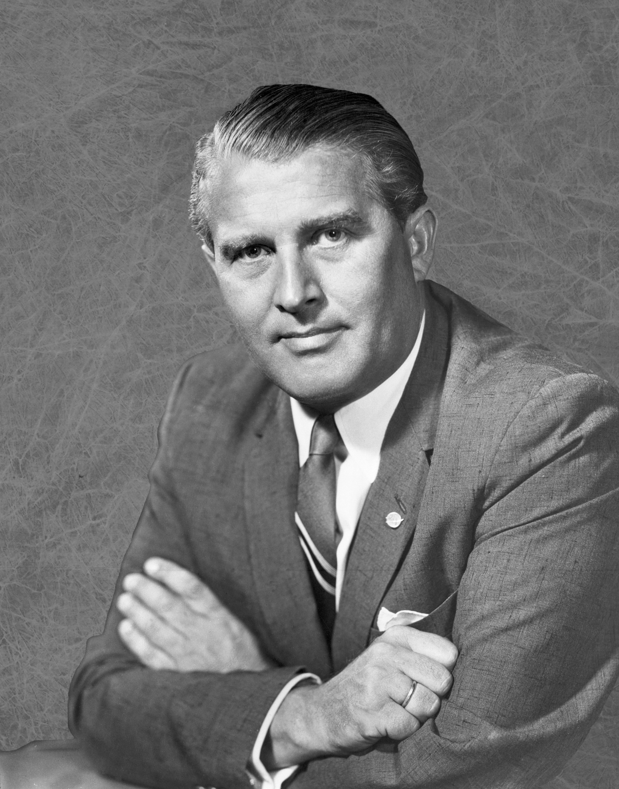
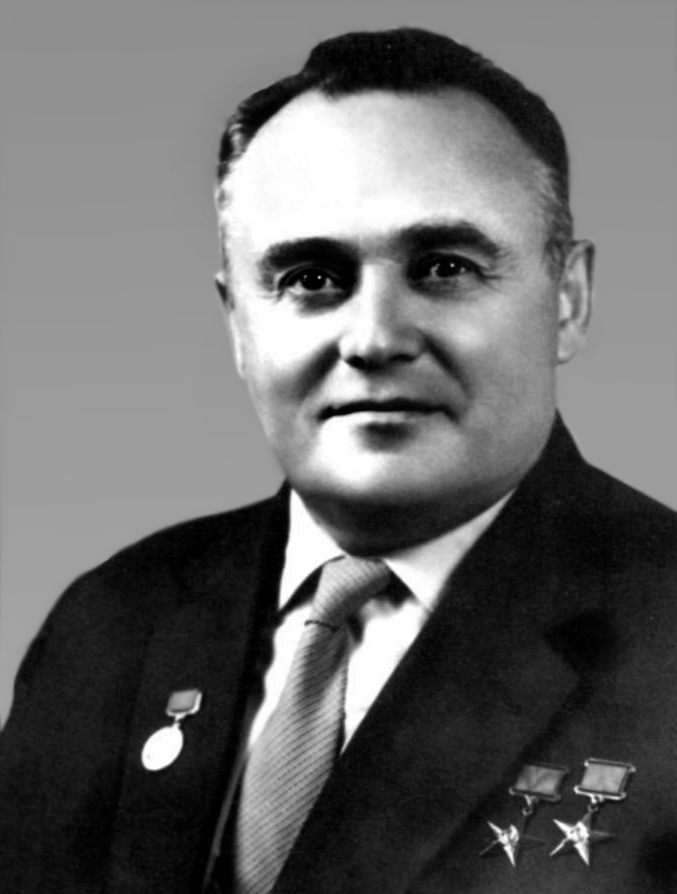
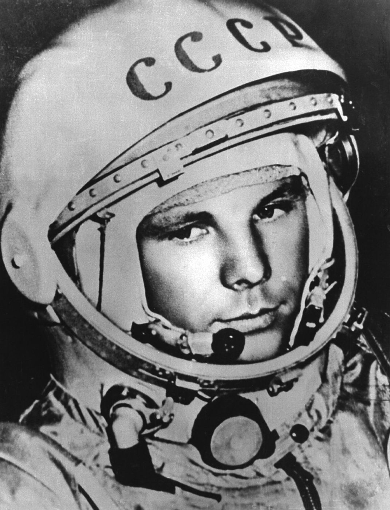
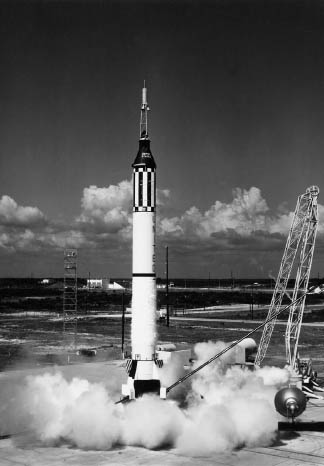

The Space Race was a decade and a half long competition between the Soviet Union and the United States to see who could dominate each other in space exploration. Although space exploration was a relatively new concept at the time, both nations had set forth bold plans to go to the moon and beyond. In the end, the Space Race had stood out as one of Humanity’s greatest triumphs due to rapid technological advancement and also one of humanity’s greatest tragedies due to the cease in technological innovation and its political legacy.
Chapters

Wernher Von Braun, 1960.
Courtesy of Marshall Space Flight Center.
Wernher Von Braun was the lead rocket designer for the United States Space Program during the Space Race.
During the Second World War, Wernher Von Braun was the lead engineer for Nazi Germany to design ballistic missiles. The most notable rocket he had designed while in Nazi Germany was the V-2 Ballistic Missile. Wernher Von Braun had surrendered to the United States when the war was over.
In spring 1945, the U.S. Army moved him about 120 subordinates to El Paso, Texas, to form the core of a new rocket group.
- Bulletin of the Atomic Scientists, Wenher Von Braun's ultimate weapon.
After Wernher Von Braun had been relocated to the United States, he went back to designing ballistic missiles for the United States Military.

Sergei Korolev, 1966.
Courtesy of Horyzonty Techniki.
Sergei Korolev was the Soviet Union's leading rocket engineer during the Space Race.
During the 1930s, the vision of space travel had captivated Sergei Korolev's imagination. He lead a group of Soviet engineers to explore liquid-fueled rockets. However, his ambitious dreams of space travel did not save him or his team from a political repression campaign in the Soviet Union which is now known as the Great Purge.
Korolev's jaw was broken by his interrogators; in Siberia he developed scurvy and lost all of his teeth.
- Stephen Budiansky, The Scientist Who Survived the Gulag to Launch Sputnik.
After Korolev's release from the gulags in 1944, he was chosen to be the lead engineer in the Soviet Union's ballistic missile program under the Soviet Premiere, Nikita Khruschev.
Sputnik-1 Replica, 2004.
Courtesy of NSSDC, NASA.
Sergei Korolev had convinced the high ranks of the Soviet Union to fund the first artifical sattelite, Sputnik, to test if his conceptualized R-7 Ballistic Missile would work. Sputnik's onboard equipment only included a radio transmitter and a battery to emit pings. After the successful launch of Sputnik, the news had been spread around the world by the public media about the Soviet Union's triumph.
New York Times and the Washington Post ran headlines that were as large as those that announced the Japanese bombing of Pearl Harbor. Newsweek discarded 20 tons of paper to run a last minute cover feature on Sputnik that included articles addressing "The Red Conquest," and "Why we are lagging." Many journalists, teachers, and politicians were alarmed that the Soviets had 'beaten' the Americans.
- Marta Schaff, Sputnik & the Space Race.
Sergei's work on the R-7 ballistic missile that was used to launch Sputnik had pleased Nikita Khruschev, the Soviet Premiere, who continued to encourage Korolev to make the rocket launch with a more heavier and sophisticated payload instead of a simple sattelite.
Political pressure was mounting in the United States due to the recent technological advancements made by the Soviet Union, as the newly developed rocket technology can be used against the United States in the form of Intercontinental Ballistic Missiles (ICBMs).
Explorer 1 Satellite, 1958.
Courtesy of NASA.
As a result, the political pressure building in the United States had forced them to develop an artificial satellite and launch vehicle of their own as well. After the United States Navy's failed attempt to build America's first orbiting artifical satellite, the Vanguard TV3, Wernher Von Braun's rocket team were given the task to create the satellite and the rocket.
The design culminated up to the Explorer 1 Satellite. The onboard equipment included: temperature sensors, geiger counter, and a micrometeorite detector.
However, the success of the Explorer 1 satellite would soon be short lived.

Yuri Gagarin, 1961.
Courtesy of ESA.
After passing intense physical and mental training, Yuri Gagarin was had been handpicked out of six candidates by Sergei Korolev to board the Vostok-1 spacecraft to orbit the Earth.
On April 12, 1961, Yuri Gagarin had become the first person to enter space and had orbited for 1 hour and 48 minutes, representing another historic triumph in manned space exploration.
He watched a bead of water float through the air and settle on the porthole of his spherical spacecraft. Beyond the thick glass, he looked up at the cosmos and down on a planet. "The sky is very dark; the Earth is bluish. Everything is seen very clearly."
- Jim Schefter, When Yuri Took Flight
Once again, the public media had broadcasted about Yuri Gagarin's flight in space. The tensions between the Soviet Union and the United States were growing even higher due to the American public being worried about the Soviet Union having a dangerous military advantage and the United States were lagging behind.
Left to right: Gus Grissom, John Glenn, and Alan Shepard, 1961.
Courtesy of NASA.
NASA Officials had picked Alan Shepard out of seven candidates to be launched aboard the Mercury-Redstone rocket, which was originally designed as an ICBM had been converted to safely carry a person onboard.
After three weeks later from the Vostok launch, NASA was given the clearance to launch Alan Shepard aboard Mercury-Redstone 3. Alan Shepard's planned 15-minute suborbital trajectory would make him the first American to enter space.

Mercury-Redstone 3 Launch, 1961
Courtesy of NASA.
On May 5, 1961, Alan Shepard became the first American to enter space. The primary goal of Shepard's mission was to research the physiological effects on the human body and evaluate the astronaut's ability to perform certain tasks such as using RCS to steer the capsule and communicating with ground control.
Shepard could distinguish major landmasses using a periscope and make out coastlines, islands, and major lakes but had difficulty identifying cities.
- John Bisney, Spaceshots and Snapshots of Projects Mercury and Gemini
In May 1962, the United States President John F. Kennedy has announced his support for a space mission to land on the moon by the end of the decade.
We choose to go to the moon in this decade and do the other things, not because they are easy but because they are hard.
- John F. Kennedy, Speech at Rice Stadium.
President Kennedy had only announced his willingness to put such a deadline to increase the public's morale about space exploration, as the United States had never achieved any prior triumphs in Space Exploration.
Americans were on their way to the moon. But going there had nothing to do with exploring the cosmos or understanding the origins of the universe
- Gerard DeGroot, The Dark Side of the Moon.
test
The day we stop exploring is the day we commit ourselves to live in a stagnant world, devoid of cuiosity, empty of dreams.
- Neil deGrasse Tyson
Anthony Mercurio Word Count: Process Paper Word Count: 487